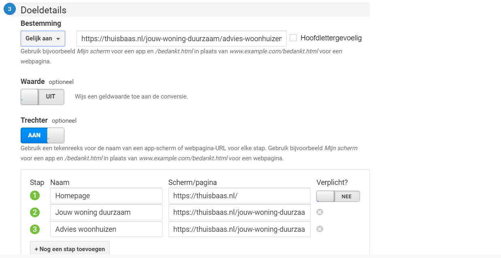

Aanpak Analyse
Vanuit Urgenda was de vraag gekomen om een Google Analytics analyse uit
te voeren van de Thuisbaas website. Het doel voor deze analyse was om te achterhalen wat de verbeterpunten
op de website zijn en wat juist al goed scoort op de website.
De opdrachtgevers van Urgenda hebben mijn Google Analytics account toegang gegeven tot het account van de Thuisbaas website waarna ik deze gegevens heb onderzocht. Voor de analyse heb ik de Google Analytics gegevens van de Thuisbaas website van 1 oktober tot 1 december (90 dagen) gebruikt zodat er gelijkwaardige omstandigheden zijn voor de verschillende gegevens.
De opdrachtgevers van Urgenda hebben mijn Google Analytics account toegang gegeven tot het account van de Thuisbaas website waarna ik deze gegevens heb onderzocht. Voor de analyse heb ik de Google Analytics gegevens van de Thuisbaas website van 1 oktober tot 1 december (90 dagen) gebruikt zodat er gelijkwaardige omstandigheden zijn voor de verschillende gegevens.
Advies en Inzichten
Uit de analyse zijn een aantal inzichten een advies gekomen die relevant
zijn voor de Thuisbaas website.
Social media
Het verhogen van bezoekers op de website door middel van Facebook en
Instagram aan de hand van social media campagnes. Het social media platform dat nu zorgt voor de meeste
bezoekers op de website is Twitter. Dit is een opvallende statistiek aangezien dit meer dan het dubbele aan
bezoekers trekt op de website terwijl Facebook en Instagram veel meer gebruikers hebben. Het optimaliseren
van Facebook en Instagram is daarom zeker een slag in te slaan door middel van bijvoorbeeld social media
campagnes.
Call to action
Onderzoeken welke bestemmingspagina wel de juiste call to action is in de
header op de homepagina. Het bouncepercentage van de pagina advies-woonhuizen is 80%. Dit is vergeleken met
de andere pagina's erg hoog. De grote call-to-action in de header op de homepagina gaat naar deze pagina.
Hier is het advies om te testen welke pagina zorgt voor een lager bouncepercentage.
Referral trouw.nl
Er zijn relatief veel gebruikers op de Thuisbaas website gekomen via een
referral (doorverwijzing) in een nieuwsartikel op Trouw.nl. Zo heeft dit bijvoorbeeld in één week voor 300
bezoeker gezorgd. Zulke doorverwijzingen zorgen dus voor meer bezoekers op de website.
Email
Een aandachtspunt zijn de lage bezoekersaantallen die via de email op de
website zijn gekomen. Een mogelijkheid om dit aantal te verhogen is bijvoorbeeld met een e-mail strategie in
de vorm van een nieuwsbrief.
Volledig rapport
Lees de gehele analyse met meer conclusies en kleinere inzichten in de
onderstaande bijlage van de Google Analytics analyse
Aanpak Doelen instellen
Na het uitvoeren van de analyse is nog de vraag vanuit Urgenda gekomen om
doelen in te
stellen voor het het invullen van verschillende formulieren als het contactformulier om zo hieruit inzichten
te achterhalen.
Aanmaken doelen
De eerste stap was het aanmaken van de doelen. De doelen die moesten
worden ingesteld waren het aanmelden voor advies woonhuizen, advies appartementen en het contactformulier.
Trechterweergave
Bij elke doelstelling is het doel bereikt bij een bepaalde
bestemmingspagina. Binnen het bereiken van een doel is een ideaal stappenproces vastgesteld. Om te meten
waar een gebruiker in welke stap het proces verlaat of juist bij de volgende stap uitkomt heb ik trechters
ingesteld.

De gegevens van de trechterweergave zijn weer zichtbaar in de conversie
rapporten.
In de afbeelding hieronder een overzicht van de hoeveelheid aangemelde
formulieren voor de aangemaakte doelen.
Reflectie
Ik vond het erg gaaf om Google Analytics analyse uit te voeren van de
Thuisbaas website. Ik heb nu veel meer een inzicht hoe in het “echt” de websitegegevens in Google Analytics
eruit zien. Wat mij opviel tijdens de analyse was hoeveel data er inzichtelijk is en dus informatie
oplevert. Het is bijvoorbeeld in één oogopslag te zien hoeveel mensen er via email op de website komen en of
dit al verkeer oplevert of dat hier juist een slag in te maken is.
Naast het uitvoeren van de analyse vond ik het ook fijn dat ze mij toevertrouwden om ook dingen aan te passen op het account zoals het instellen van de doelen. Ik ben blij dat ik dit heb kunnen doen en dat het uiteindelijk ook echt werkt zodat Thuisbaas meer gegevens kan verzamelen over verschillende aanmeldprocessen.
Naast het uitvoeren van de analyse vond ik het ook fijn dat ze mij toevertrouwden om ook dingen aan te passen op het account zoals het instellen van de doelen. Ik ben blij dat ik dit heb kunnen doen en dat het uiteindelijk ook echt werkt zodat Thuisbaas meer gegevens kan verzamelen over verschillende aanmeldprocessen.